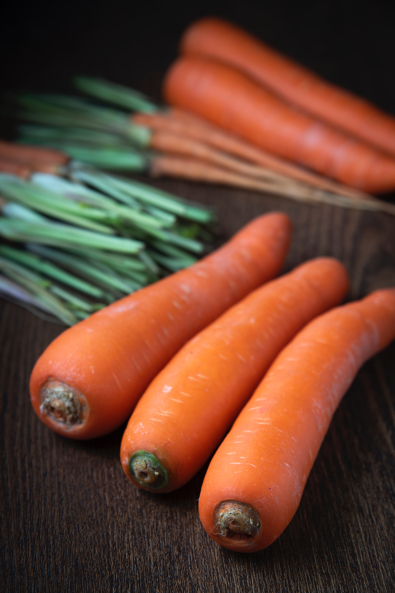
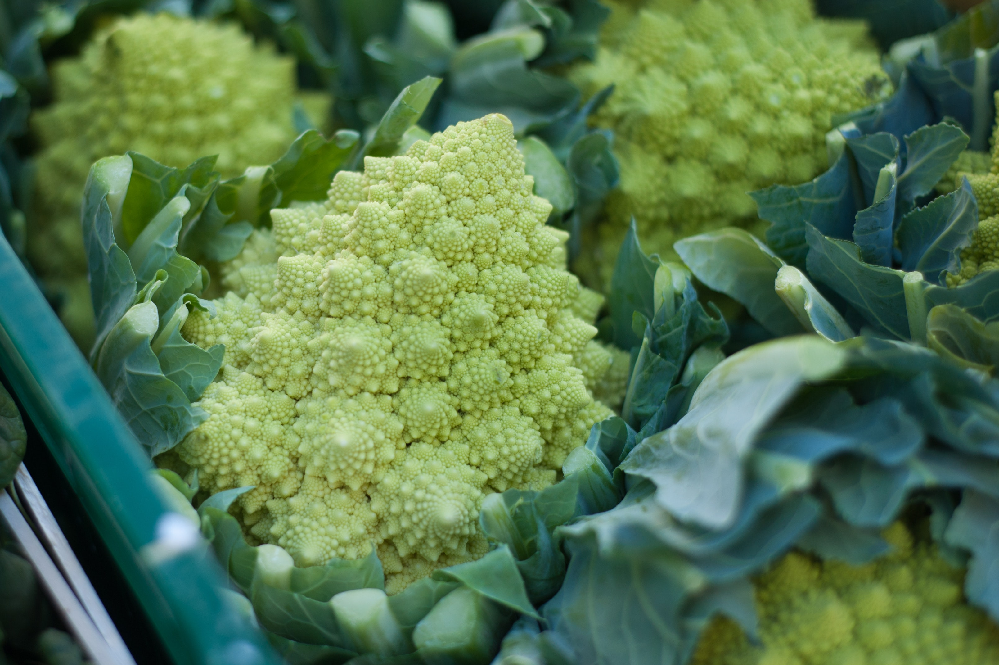
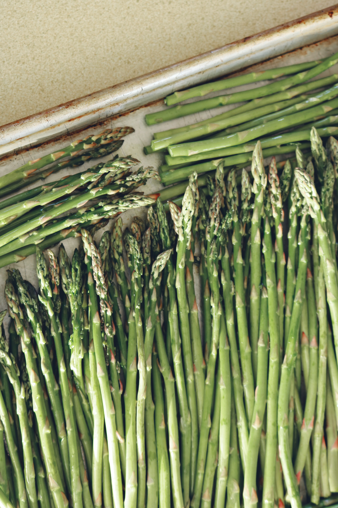
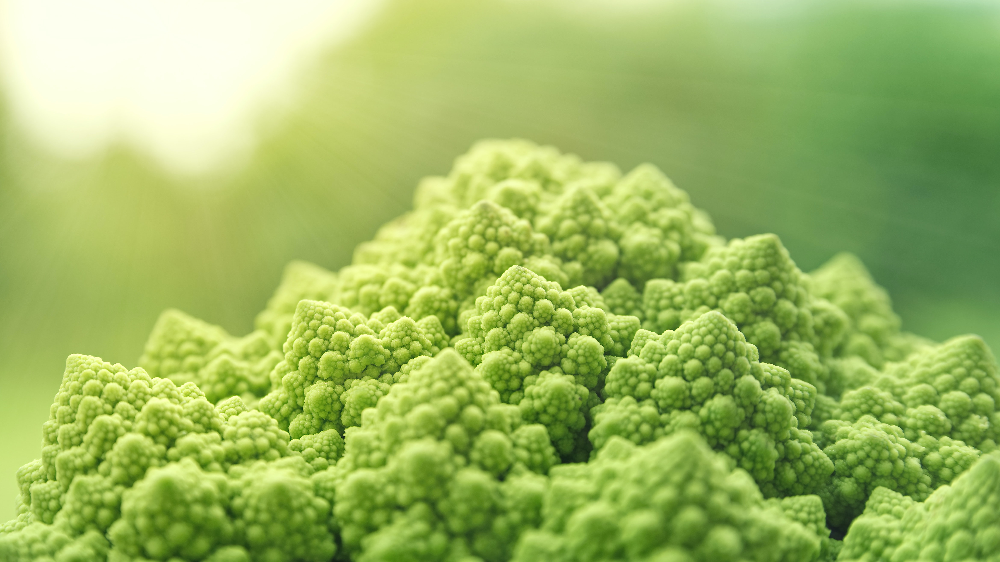
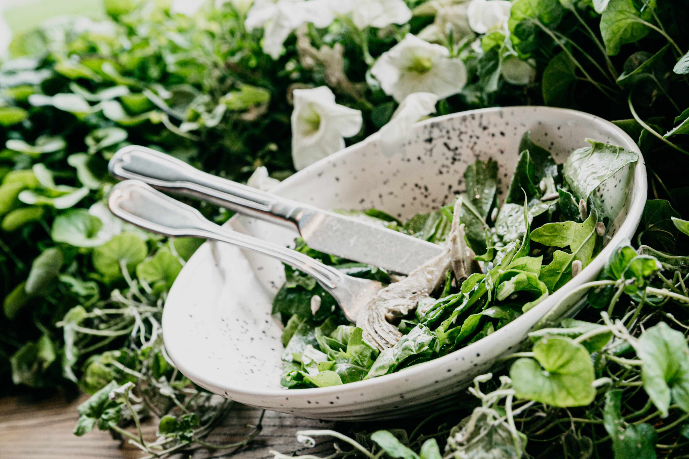
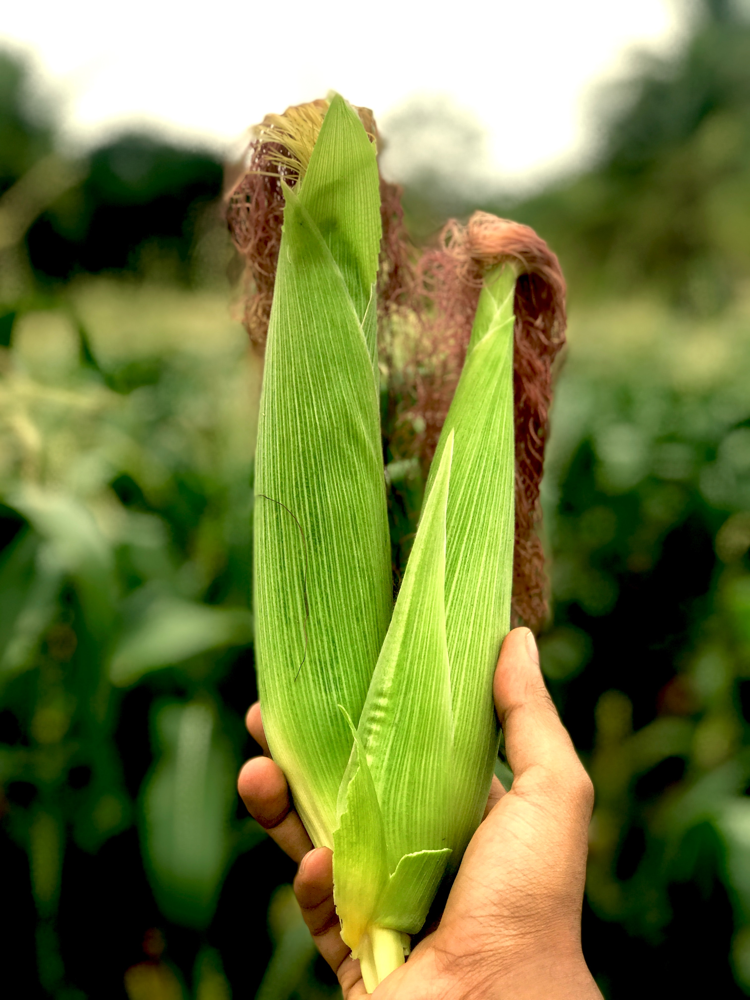
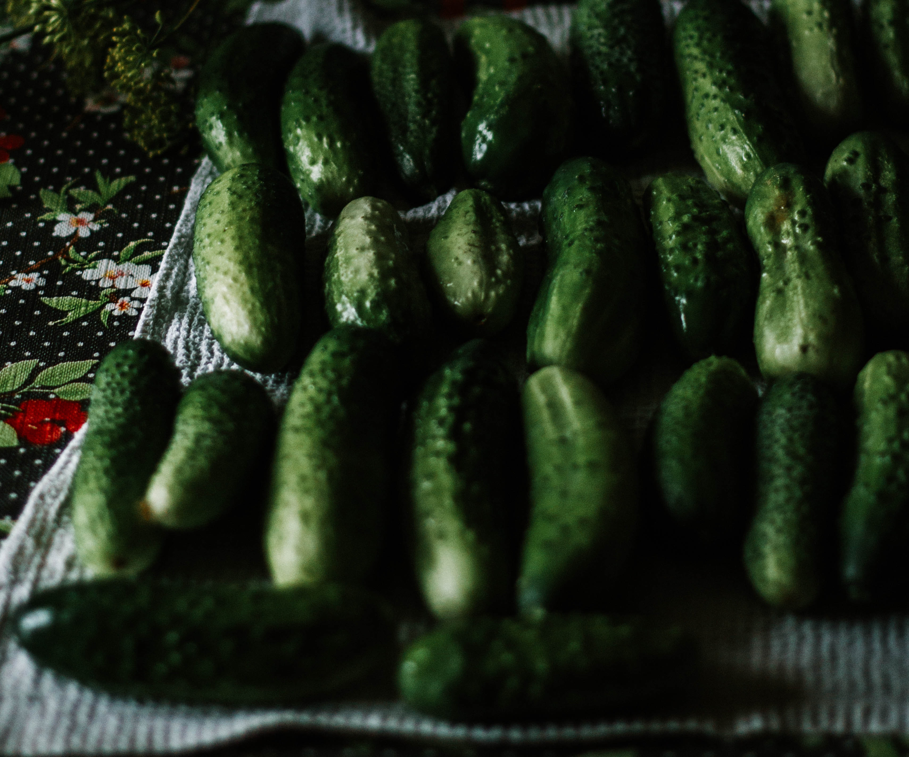

we offer the following vegetables | on market:
carrots
It is crunchy, tasty, and highly nutritious. Carrots are a particularly good source of beta carotene, fiber, vitamin K1, potassium, and antioxidants ( 1 ). They also have a number of health benefits. They're a weight-loss-friendly food and have been linked to lower cholesterol levels and improved eye health
R34.00 per 2kgbroccoli
Bone health: Broccoli contains high levels of both calcium and vitamin K, both of which are important for bone health and prevention of osteoporosis. Along with calcium, broccoli is also full of other nutrients like magnesium, zinc and phosphorous.
R44.00 per 2kgasparagus
Asparagus is a nutrient-packed vegetable. It is a very good source of fiber, folate, vitamins A, C, E and K, as well as chromium, a trace mineral that enhances the ability of insulin to transport glucose from the bloodstream into cells. That's good news if you're watching your blood sugar.
R54.40c per 2kgcauliflower
Cauliflower is a cruciferous vegetable that is naturally high in fiber and B-vitamins. It provides antioxidants and phytonutrients that can protect against cancer. It also contains fiber to enhance weight loss and digestion, choline that is essential for learning and memory, and many other important nutrients.
R24.00 per 2kgspinach
Spinach is rich in vitamins A, C and K, magnesium, iron and manganese. Eating this leafy green veggie may benefit eye health, reduce oxidative stress and reduce blood pressure levels among other health functions.
R41.40c per 2kgcorn
As a good source of antioxidant carotenoids, such as lutein and zeaxanthin, yellow corn may promote eye health. It's also a rich source of many vitamins and minerals. For this reason, moderate consumption of whole-grain corn, such as popcorn or sweet corn, can be an excellent addition to a healthy diet.
R75.00 per 2kgcucumber
They are low in calories but contain many important vitamins and minerals, as well as a high water content. Eating cucumbers may lead to many potential health benefits, including weight loss, balanced hydration, digestive regularity and lower blood sugar levels.
R14.44 per 2kg